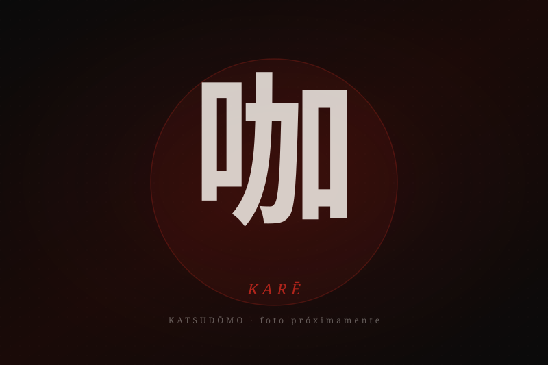
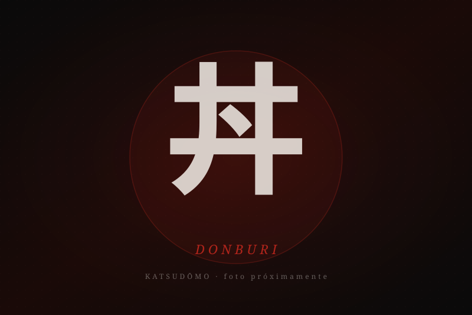
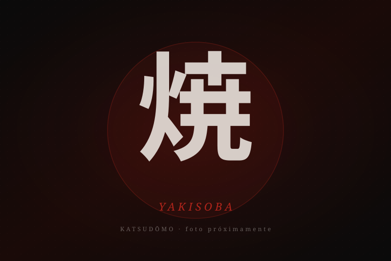
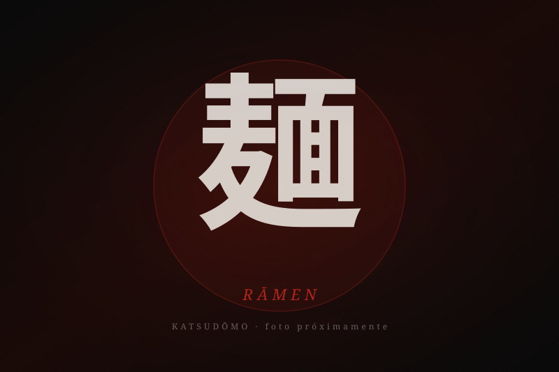

Comida japonesa de calle, hecha con técnica y respeto al producto. Delivery en Surquillo, Miraflores,
San Isidro, San Borja, Surco y zonas cercanas de Lima. Cada plato tiene una historia —
descúbrela aquí.
12 bolitas con salsa sweet chili casera calibrada entre 8 000 y 12 000 SHU. El dulce llega un segundo antes del picante: secuencia, no golpe.
Yakisoba
焼 · 焼きそば
Fideos salteados al wok. Tradición de yatai.
鶏📸 pronto
Yakisoba Pollo
鶏焼きそば tori yakisoba
Pollo marinado, wok de alta temperatura.
Fideos salteados con pechuga de pollo marinada 4 horas en shoyu-mirin y salsa Katsudōmo. Col, zanahoria y cebollita china.
豚
Yakisoba Cerdo
豚焼きそば buta yakisoba
El clásico japonés con filete de cerdo.
Fideos salteados al wok con filete de cerdo en láminas finas, salsa Katsudōmo, col y zanahoria. Intenso, ahumado, honesto.
辛📸 pronto
Yakisoba Picante
辛焼きそば kara yakisoba
Estilo yatai nocturno. Picante calibrado.
Yakisoba con salsa picante casera estilo yatai, ají togarashi y aceite de chili. Perfil equilibrado, no quema: despierta.
玉📸 pronto
Tamago Yakisoba Pollo
玉子焼きそば・鶏 tamago yakisoba tori
Yakisoba de pollo con tamagoyaki encima.
Nuestro yakisoba de pollo coronado con tamagoyaki (tortilla japonesa en capas, cocción lenta a 140 °C). Dulce, umami, doble textura.
玉📸 pronto
Tamago Yakisoba Cerdo
玉子焼きそば・豚 tamago yakisoba buta
Yakisoba de cerdo con tamagoyaki encima.
Yakisoba de cerdo rematado con tamagoyaki en capas. La dulzura del huevo balancea el umami del shoyu y el ahumado del cerdo.
Obento
弁 · お弁当
Caja completa. Equilibrio japonés en una sola bandeja.
弁
Obento
お弁当 obento
Proteína, tamagoyaki, yakisoba y onigiri.
Bento completo con pollo chicken katsu, tamagoyaki, yakisoba corto, ensalada y onigiri. La fórmula japonesa del ichijū-sansai en una sola caja.
挽
Obento Menchi
お弁当メンチカツ obento menchikatsu
Hamburguesa japonesa rellena de carne y cebolla.
Bento con menchi katsu — hamburguesa japonesa de carne molida de res y cerdo empanizada en panko. Tamagoyaki, yakisoba y onigiri.
豚
Obento Cerdo
お弁当豚カツ obento tonkatsu
Premium: lomo de cerdo panko dorado.
Bento premium con tonkatsu — lomo de cerdo empanizado en panko, corteza dorada y crujiente. Tamagoyaki, yakisoba y onigiri.
Curry Kare
咖 · カレー
Salsa curry japonesa sobre arroz japónica.
咖

📸 pronto
Chicken Katsu Kare
チキンカツカレー chikin katsu karē
Pollo panko con salsa curry especiada.
Pechuga de pollo empanizada en panko con salsa curry japonesa de 12 especias, cocida a fuego lento 3 horas. Arroz japónica de grano corto.
豚📸 pronto
Tonkatsu Kare
豚カツカレー tonkatsu karē
Lomo de cerdo panko con salsa curry.
Tonkatsu de lomo de cerdo sobre arroz japónica bañado en salsa curry japonesa. Crujiente por fuera, jugoso por dentro, balanceado por el curry.
Mini Obento
小 · ミニお弁当
Versión reducida para almuerzos rápidos.
小
Mini Obento
ミニお弁当 mini obento
Versión reducida del obento clásico.
Mini bento con chicken katsu, tamagoyaki, arroz japónica y vegetales salteados. Mismo balance, porción de almuerzo rápido.
豚
Mini Obento Cerdo
ミニお弁当豚カツ mini obento tonkatsu
Mini bento con tonkatsu de cerdo.
Mini bento con tonkatsu de cerdo empanizado, tamagoyaki y arroz. Porción reducida, mismo crujido.
挽
Mini Obento Menchi
ミニお弁当メンチカツ mini obento menchikatsu
Mini bento con hamburguesa japonesa.
Mini bento con menchi katsu — hamburguesa de res y cerdo empanizada en panko. Tamagoyaki y arroz japónica.
Donburi
丼 · どんぶり
Tazón de arroz con proteína encima.
揚

📸 pronto
Karaage Donburi
唐揚げ丼 karaage donburi
Pollo frito japonés sobre arroz.
Pollo marinado en shoyu-jengibre-ajo-sake, rebozado en katakuriko (fécula de papa) y frito en dos temperaturas. Sobre arroz japónica con cebolla y huevo.
爆📸 pronto
Bang Bang Arroz
バンバン丼 banban don
Estilo bang bang sobre arroz japónica.
Tazón bang bang con pollo marinado, salsa cremosa picante, sésamo tostado y cebollita china sobre arroz japónica.
丼
Katsudon
カツ丼 katsudon
Plato bandera. Tonkatsu, huevo y warishita.
Tonkatsu sobre arroz japónica con caldo warishita (dashi + shoyu + mirin + azúcar), cebolla y huevo ligeramente cuajado. El plato que le da nombre a la casa.
麺

📸 pronto
Bang Bang Fideo
バンバン焼きそば banban yakisoba
Estilo bang bang sobre fideos salteados.
Fideos salteados al wok con pollo marinado, salsa bang bang cremosa, sésamo y cebollita china. Versión noodle del clásico de arroz.
Ramen
麺 · ラーメン
Tazón de fideos en caldo profundo.
麺

📸 pronto
Ramen Tonkatsu
豚カツラーメン tonkatsu rāmen
Caldo profundo con tonkatsu crujiente.
Fideos ramen en caldo shoyu de hueso de cerdo cocinado 12 horas, coronado con tonkatsu recién frito, huevo marinado ajitsuke y nori.
辛📸 pronto
Ramen Picante
辛ラーメン kara rāmen
Caldo picante estilo yatai.
Ramen con caldo picante estilo yatai, aceite de chili rojo, ají togarashi, huevo marinado y cebollita china. Calor que despierta, no quema.
Akira Combo
特 · 明コンボ
La forma más rápida de probarlo todo.
明
Akira Combo
明コンボ akira konbo
6 takoyakis + 2 onigiris + bebida.
6 bolitas de takoyaki original, 2 onigiris (tsuna mayo y pollito teriyaki) y bebida a elección: Aloe Nacional, Inca Kola o Coca-Cola. Para descubrir Katsudōmo en una sola orden.
Adicionales
追 · 追加
Para complementar tu pedido.
握
Onigiri (unidad)
おにぎり（単品） onigiri tanpin
Arroz japónica con relleno a elección.
Onigiri de arroz japónica de grano corto, relleno a elección: tsuna mayo o pollito teriyaki. Envuelto en alga nori seca.
挽
Adicional Menchi
追加メンチカツ tsuika menchikatsu
Hamburguesa japonesa suelta.
Menchi katsu individual — carne molida de res y cerdo empanizada en panko, crujiente por fuera y jugosa por dentro.
蛸
Adicional Takoyaki x3
追加たこ焼き×3 tsuika takoyaki san
Tres bolitas de takoyaki adicionales.
3 bolitas de takoyaki original adicionales para acompañar cualquier plato. Misma receta, mismo crujido.
注文
¿Listo para pedir?
Hacemos delivery en Lima. Escríbenos por WhatsApp y coordinamos tu pedido. Cada plato se prepara al
momento, con ingredientes japoneses de verdad.